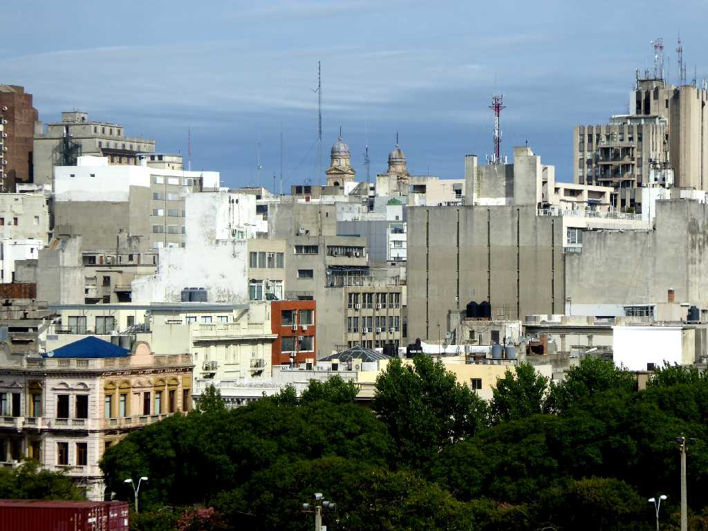
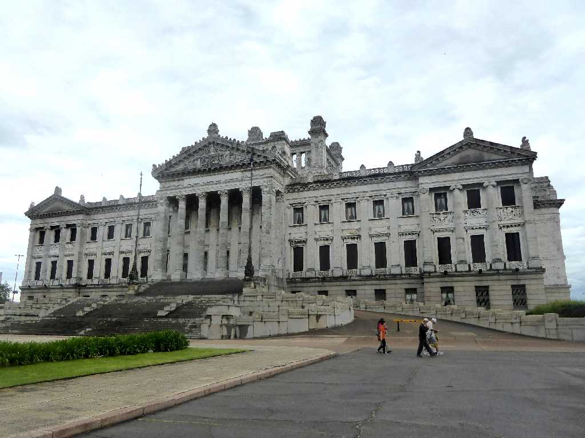
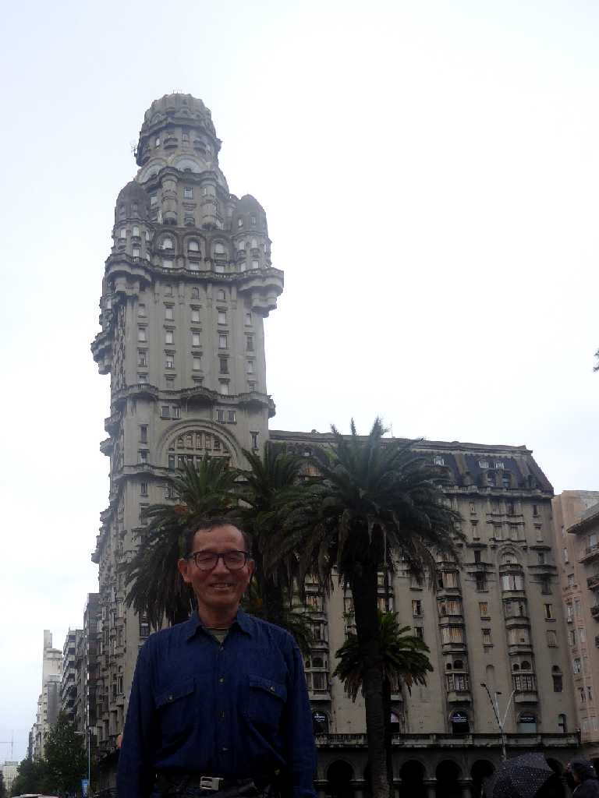
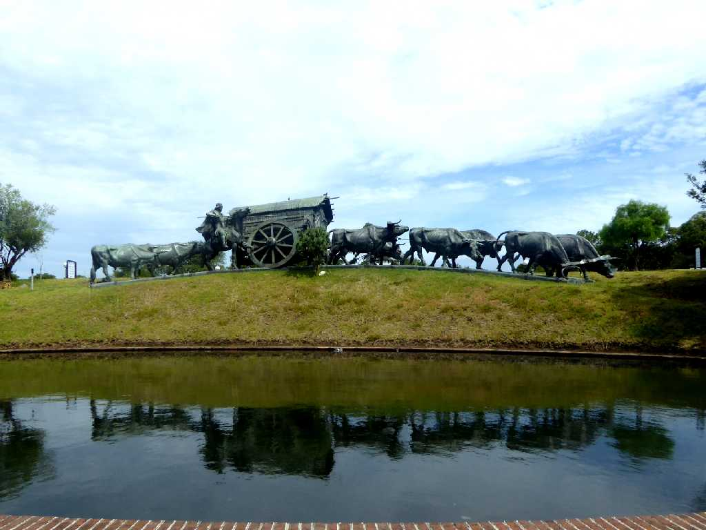
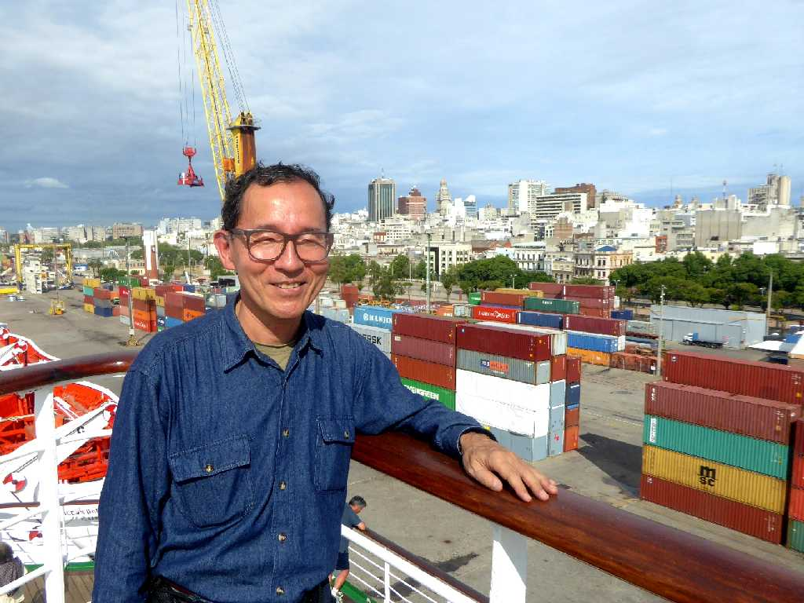

Porto de Montevidéo
ラプラタ川の河口に１８世紀スペイン人入植者が築いた街

Palacio Legislativo

February 13 2016 Palacio Salvo Plaza Independencia
イタリア系移民のサルボ家が１９２８年に創った高さ９５ｍあるサルボ宮殿

Monumento a la Carreta

February 13 2016 Porto de Montevidéo
地球一周の船旅出港５９日目２７,２３５ｋｍ航行しモンテビデオ港に着岸